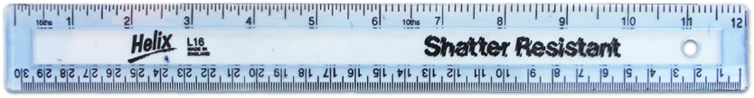

Homeopaths: The horizontal lines in the image above are not straight. Furthermore, the way they bend changes as you look around the image.
Science: The lines bend depending on where you look? But the image is on a normal computer monitor, it can't know where you're looking. It isn't scientifically plausible, we'd have to throw away our current understanding of physics.
Homeopaths: We don't know how it works, we just know it does. We have testimony from millions saying those horizontal lines bend.
Science: Ok, we've tested your theory. Turns out the lines don't bend at all, it's an optical illusion, the human brain simply thinks the lines are bent.
Here, drag this ruler to the top of the page, you can see the lines are straight.
Homeopaths: Science can't explain everything, what about the human spirit? The soul?
Science: It's nothing to do with that. Do the test with the ruler, it's just an illusion.
User of Homeopathy: Hey, my cat looked at that picture and he pulled a face that said "Man, those lines are bent". How can it be an illusion if it works on animals?
Science: Wait, what? You're casting your own judgement of the situation onto the animal. The animal isn't experiencing the illusion, you're deciding it does. Look at the ruler, it proves the lines are straight!
Homeopaths: Ahh, the lines don't bend when it's tested, it's not something that can be tested. When it's not being tested, it works, fact.
Science: That's not evidence, that's just trying to protect yourself against evidence.
Homeopaths: You're part of a government conspiracy to force us to believe those lines are straight!
Science: What? We could gain just as much by claiming those lines are bent, it doesn't benefit us financially, we just want the truth.
User of Homeopathy: Look now, does it really matter? I agree with homeopathy, some people don't. To me, those lines are bent. Does it really matter if they really aren't? Where's the harm?
Homeopaths: Yes! Pro choice! By the way, if you want to see some really cool lines, you should totally stare at the sun for 20 minutes.
User of Homeopathy: I totally should!